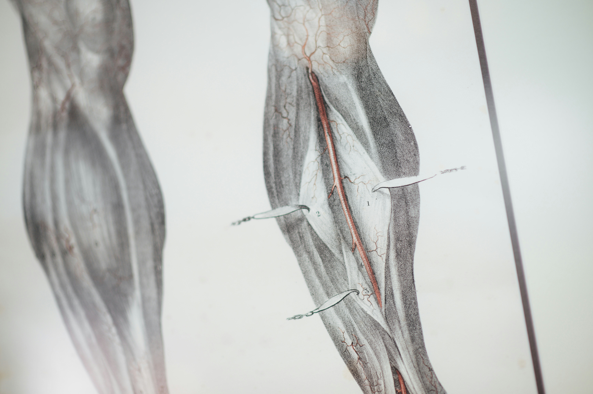

Recovery & Lifestyle
This page focuses on healthy lifestyle habits, nutrition, and routines that support full recovery from injuries and prevent future setbacks.
Habits & Tracking

Developing consistent daily habits ensures long-term progress during recovery.
- Get adequate sleep (7–9 hours per night).
- Track pain, swelling, and range of motion improvements.
- Stay consistent with prescribed exercises and stretching.
- Reduce stress through meditation or light activities.
Nutrition for Healing

Proper nutrition accelerates tissue repair and reduces inflammation.
- Eat protein-rich foods to rebuild muscle tissue.
- Consume calcium and vitamin D for bone recovery.
- Hydrate regularly—aim for 2–3 liters per day.
- Include fruits, vegetables, and whole grains for micronutrients.
Returning to Sport
Once your body regains strength and flexibility, gradually return to athletic training.
- Start with low-impact movements (cycling, swimming).
- Rebuild endurance and coordination before high-intensity drills.
- Follow a step-by-step return-to-play plan.
- Listen to your body—stop if pain returns.